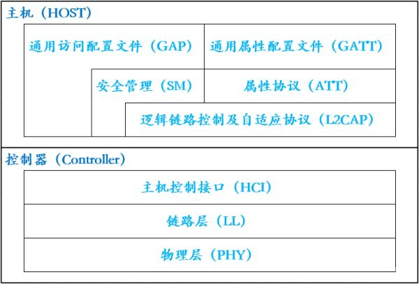
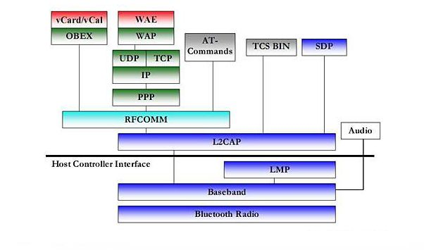
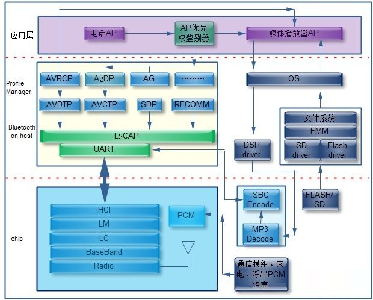

Bluetooth学习笔记_BLE_基础知识点1
Bluetooth学习笔记 【BLE 基础知识点 1】
这里是我搜集的一些关于 BLE 的基本概念 和 说明。
BLE 知识点
1、蓝牙协议栈层次

2、BLE低功耗蓝牙核心协议层详解（Bluetooth Core）
1、物理层（Physical Layer，简写 PHY）：PHY层用来指定BLE所用的无线频段，调制解调方式和方法等。是1Mbps自适应跳频的GFSK射频，工作于免许可证的2.4GHz ISM（工业、科学与医疗）频段。PHY层做得好不好，直接决定整个BLE芯片的功耗，灵敏度以及selectivity等射频指标。
2、链路层（Link Layer，简写 LL）：LL层是整个BLE协议栈的核心，也是BLE协议栈的难点和重点。LL层要做的事情非常多，比如具体选择哪程度 个射频通道进行通信，怎么识别空中数据包，具体在哪个时间点把数据包发送出去，怎么保证数据的完整性，ACK如何接收，如何进行重传，以及如何对链路进行管理和控制等等。LL层只负责把数据发出去或者收回来，对数据进行怎样的解析则交给上面的GAP或者ATT。
3、主机控制接口层（Host Controller Interface，简写 HCI）：HCI是可选的，HCI主要用于2颗芯片实现BLE协议栈的场合，用来规范两者之间的通信协议和通信命令等。
4、通用访问配置文件层（Generic access profile，简写GAP）：GAP是对LL层payload（有效数据包）如何进行解析的两种方式中的一种，而且是最简单的那一种。GAP简单的对LL payload进行一些规范和定义，因此GAP能实现的功能极其有限。GAP目前主要用来进行广播，扫描和发起连接等。
5、逻辑链路控制及自适应协议层（Logical Link Control and Adaptation Protocol，简写 L2CAP）：L2CAP对LL进行了一次简单封装，LL只关心传输的数据本身，L2CAP就要区分是加密通道还是普通通道，同时还要对连接间隔进行管理。
6、安全管理层（Security Manager，简写 SM）：SMP用来管理BLE连接的加密和安全的，如何保证连接的安全性，同时不影响用户的体验，这些都是SMP要考虑的工作。
7、属性协议层（Attribute protocol，简写 ATT）：简单来说，ATT层用来定义用户命令及命令操作的数据，比如读取某个数据或者写某个数据。BLE协议栈中，开发者接触最多的就是ATT。BLE引入了attribute概念，用来描述一条一条的数据。Attribute除了定义数据，同时定义该数据可以使用的ATT命令，因此这一层被称为ATT层。
8、通用属性配置文件层（Generic Attribute profile，简写 GATT）：GATT用来规范attribute中的数据内容，并运用group（分组）的概念对attribute进行分类管理。没有GATT，BLE协议栈也能跑，但互联互通就会出问题，也正是因为有了GATT和各种各样的应用profile，BLE摆脱了ZigBee等无线协议的兼容性困境，成了出货量最大的2.4G无线通信产品。
3、蓝牙协议组成

蓝牙协议体系中的协议按SIG的关注程度分为四层：
（1）核心协议：BaseBand、LMP、L2CAP、SDP；
（2）电缆替代协议：RFCOMM；
（3）电话传送控制协议：TCS-Binary、AT命令集；
（4）选用协议：PPP、UDP/TCP/IP、OBEX、WAP、vCard、vCal、IrMC、WAE。
除上述协议层外，规范还定义了主机控制器接口（HCI），它为基带控制器、连接管理器、硬件状态和控制寄存器提供命令接口。在上图中可见，HCI位于L2CAP的下层，但HCI也可位于L2CAP上层。
蓝牙核心协议由SIG制定的蓝牙专用协议组成。绝大部分蓝牙设备都需要核心协议（加上无线部分），而其他协议则根据应用的需要而定。总之，电缆替代协议、电话控制协议和被采用的协议在核心协议基础上构成了面向应用的协议。
4、蓝牙基本架构

4.1底层硬件模块
（1）无线射频模块（Radio）：蓝牙最底层，带微带天线，负责数据接收和发送。
（2）基带模块（BaseBand）：无线介质访问约定。提供同步面向连接的物理链路（SCO）和异步无连接物理链路（ACL），负责跳频和蓝牙数据及信息帧传输，并提供不同层次的纠错功能（FEC和CTC）。
（3）链路控制模块（LC）：蓝牙数据包的编码和解码。
（4）链路管理模块（LM）：负责创建、修改和发布逻辑链接，更新设备间物理链接参数，进行链路的安全和控制。
（5）主机控制器接口（HCI）：是软硬件接口部分，由基带控制器、连接管理器、控制和事件寄存器等组成；软件接口提供了下层硬件的统一命令，解释上下层消息和数据的传递。硬件接口包含UART、SPI和USB等。
4.2.中间协议层
（1）逻辑链路控制与适配协议（L2CAP）：蓝牙协议栈的基础，也是其他协议实现的基础。向上层提供面向连接和无连接的数据封装服务；采用了多路技术、分割和重组技术、组提取技术来进行协议复用、分段和重组、认证服务质量、组管理等行为。
（2）音视频发布传输协议（AVDTP）和音视频控制传输协议（AVCTP）：二者主要用于Audio/Video在蓝牙设备中传输的协议，前者用于描述传输，后者用于控制信号交换的格式和机制。
（3）服务发现协议（SDP）：蓝牙技术框架至关重要一层，所有应用模型基础。动态的查询设备信息和服务类型，建立一条对应的服务通信通道，为上层提供发现可用的服务类型和属性协议信息。
（4）串口仿真协议（RFCOMM）：实现了仿真9针RS232串口功能，实现设备间的串行通信。
（5）二进制电话控制协议（TCS）：基于 ITU-T Q.931 建议的采用面向比特的协议，它定义了用于蓝牙设备之间建立语音和数据呼叫的控制信令（Call Control Signalling），并负责处理蓝牙设备组的移动管理过程。
4.3.蓝牙Profile
Bluetooth Profile是蓝牙设备间数据通信的无线接口规范。目前有四大类、十三种协议规则，厂商可以自定义规格。几种最常见的Profile文件：
（1）通用访问配置文件（GAP）：其他所有配置文件的基础，定义了在蓝牙设备间建立基带链路的通用方法，并允许开发人员根据GAP定义新的配置文件。包含所有蓝牙设备实施的功能，发现和连接设备的通用步骤，基本用户界面等通用操作。
（2）服务发现应用配置文件（SDAP）：描述应用程序如何用SDP发现远程设备服务，可与向/从其他蓝牙设备发送/接收服务查询的SDP连接。
（3）串行端口配置文件（SPP）：基于ETSI TS 07.10规格定义如何设置虚拟串行端口及如何连接两个蓝牙设备。速度可达128kb/s。
（4）通用对象交换配置文件（GOEP）：可以将任意对象（如图片、文档等）从一个设备传输到另一个设备。
- Post Title: Bluetooth学习笔记_BLE_基础知识点1
- Post Author: Geng Yuchao
- Post Link: https://github.com/gengyuchao/gengyuchao.github.io/2020/08/09/Bluetooth/Bluetooth学习笔记_BLE_基础知识点1/
- Copyright Notice: All articles in this blog are licensed under CC BY-NC-SA 4.0 unless stating additionally.